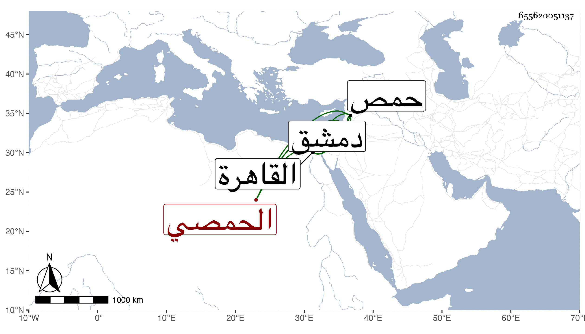

0902Sakhawi.DawLamic.ITO20230111-ara1.EIS1600.655620051137
Biography ID: 655620051137
أحمد ابن أبي أحمد بن الشنبل بضم المعجمة وسكون النون بعدها موحدة مضمومة ثم لام وهو مكيال القمح بحمص أبو العباس الحمصي . اشتغل ببلده ومهر وبرع ولي قضاءها وقدم القاهرة مرارا وتنزل في خانقاه سعيد السعداء ثم سعى في قضاء دمشق فوليه في آخر سنة ست وثمانمائة ثم عزل عن قرب ، وكان نبيها في الفقه مع طيش فيه . قاله شيخنا في أنبائه وكذا ذكره في معجمه وقال ولي قضاء حمص وله نباهة في الفقه وسعى في قضاء دمشق بالمال ففوض إليه في آخر سنة ست ثم عزل بعد أشهر ثم ناب بعد عن الأخنائي . ومات بها سنة ست عشرة والظاهر أنه كان شافعيا وقد رأيت الخيضري ذكره في الشافعية .
